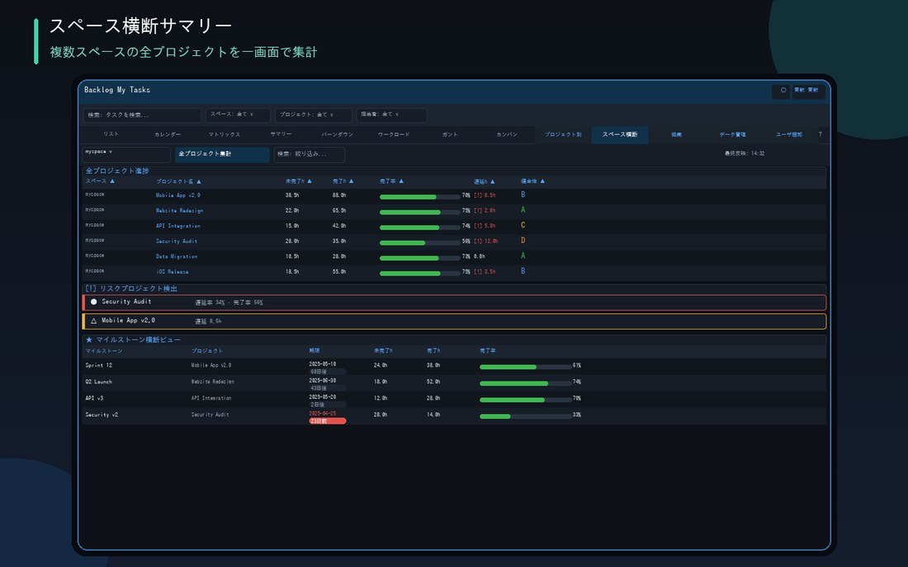
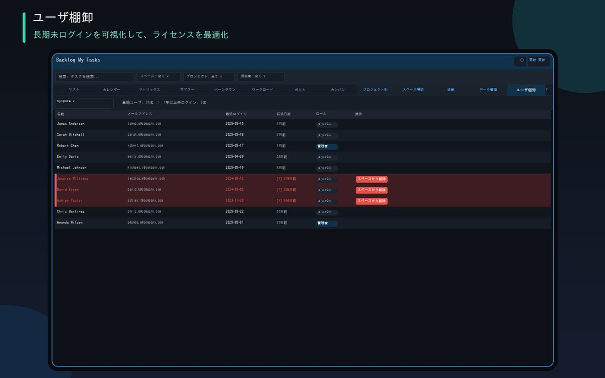

여러 스페이스의 상태를 한눈에 비교하고, 휴면 계정도 바로 찾을 수 있으며, Backlog의 ★ 럭킹도 확인할 수 있습니다.

완료율・지연 시간・건전성 점수를 나란히 비교
지연율 50% 이상=🔴, 20% 이상=🟡으로 자동 표시
모든 프로젝트의 마감일과 완료율을 한번에 확인

모든 사용자의 로그인 날짜와 경과 일수를 목록으로 표시
1년 이상 미로그인 계정은 빨간색으로 강조 표시하고 자동 정렬
필요 없는 계정은 그 자리에서 스페이스에서 삭제(스페이스 관리자 전용)
Backlog 본가의 ★(스타) 실적을 집계해 받은 수・준 수・순★(받음−준)을 각각 럭킹으로 표시
준 사람・받은 사람의 태그 클라우드를 보기 쉽게 표시. 월별 ★ 총수 추이와 전월 대비 증감도 확인 가능
준 사람→받은 사람 조합 단위의 페어 럭킹도 표시